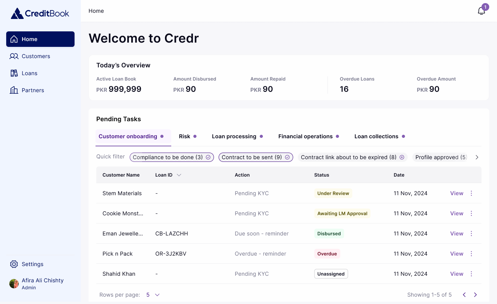
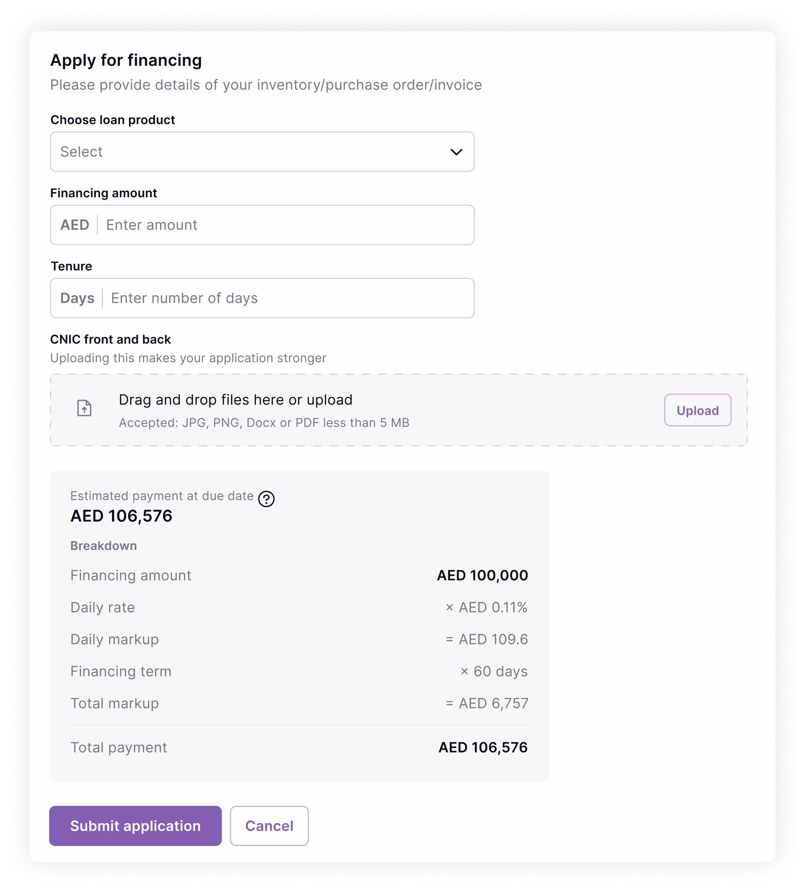

Systems Thinking and Equity: Pivot

Context
In late 2023, I co-led a strategic pivot at CreditBook because of a growing need for a sustainable revenue model to support the company's growth beyond the free mobile ledger app for micro, small, and medium businesses. The focus was on identifying where value actually lies for these underserved businesses. Drawing on systems thinking and participatory design, we mapped the inefficiencies faced by SMBs over a three-month period.
Problem
Only 7% of Pakistan's 5.2 million SMBs receive traditional financing, resulting in poor cash flow and slow growth. Despite digitisation, financial accessibility remained a gap — particularly for businesses lacking a formal credit history. We set out to empower businesses with financing that's easy and accessible for their customers, build credit history in a frictionless way, and enable fast, reliable product access with minimal red tape.
Opportunity
Expanding CreditBook's product suite meant value on three sides at once: SMBs met unmet financing needs for their own customers without investing in regulatory expertise; customers gained expanded, affordable credit; and CreditBook gained a new revenue stream, a larger customer base, and better underwriting data.
Process
We observed the complex workflows of SMBs — how they manage cash flow, deal with credit limitations, and interact with customers — and mapped every inefficiency and automation opportunity using service-design principles, consolidating findings into a map organized around one theme: simplification. We then ran participatory workshops with internal and external decision-makers to identify product principles, preferred interfaces, and language that resonated with their actual experience — which is what shaped the platform's priority on speed and accessibility over feature completeness.

Outcome
The pivot resulted in a loan operating system to process and manage all integrated finance offerings. In under a year, CreditBook disbursed over 8,000 loans at an average of 14 hours each, and onboarded 12 new partners for embedded financing and direct lending.